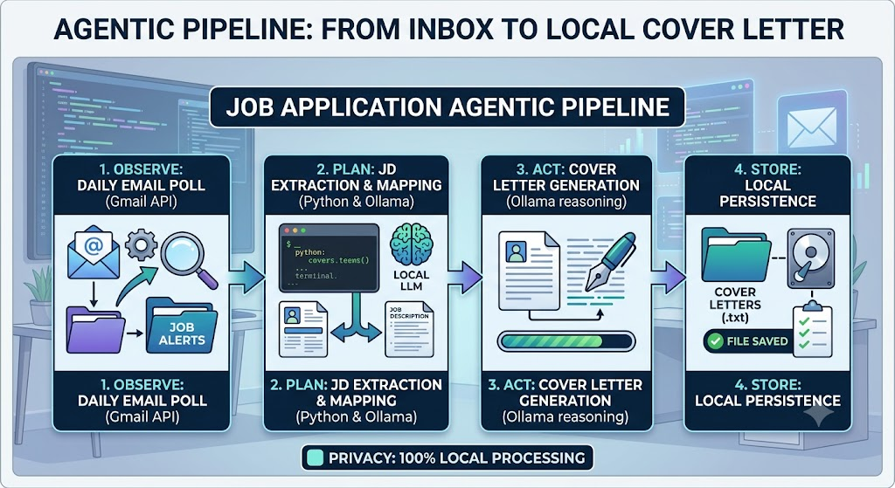
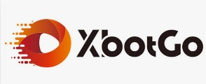
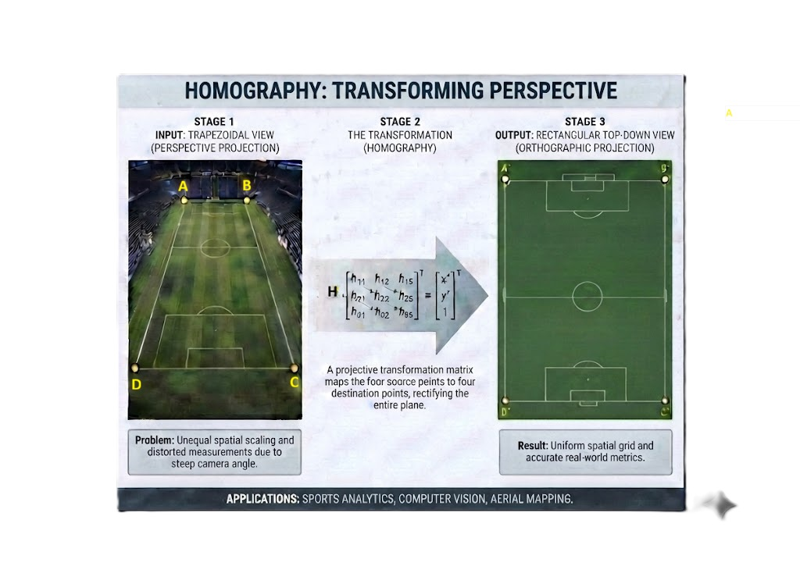

Mistral Chatbot
Quick and easy website using python and html syntax with the Mistral API. The site is stored in Github and deployed at Render.com (if its deployed). Have a convo with the LLM.
Here are some projects I am experimenting with to innovate on new ideas while maintaining and learning new skills. Since a lot of the projects contain personal API codes and information, I am not sharing code but feel free to ask about the code or any collaboration oppertunities. I'm happy to discuss!
← Back to Home
Quick and easy website using python and html syntax with the Mistral API. The site is stored in Github and deployed at Render.com (if its deployed). Have a convo with the LLM.

One of the more manual actions in the job applicaiton process is creating a personalized cover letter for the position you are applying too. I created this (python-based) agent to search my gmail (GMAIL API), find jobs descriptions and create a cover letter (Ollama) using my resume/experience and injecting prompts to create the letter. I save it locally incase i want to use it when applying to a job. Processing is done locally but can be migrated in the cloud via Gemini for "cloud-based" process.

I love the Xbotgo AI Camera live streaming capabilties. They provide their own platform and the OBS link. I wanna play with creating my own stream platform. I'll see how far I can get. So Xbotgo blocks their stream link to be displayed in a custom platform. might be a way around with the youtube feed. still working it.

Using my Xbotgo Falcon camera, I wanted to map my positions on a soccer field. I've used some GPS devices but I wanted to do it via video without the need to purchase more devices. I went out, set up a field, recorded my movement, and plotted it on a 2D surface. Are are some short comings that are limted by my equipment but I think some more code could hurdle them. See if you can do the same with a video. Check out the repo.